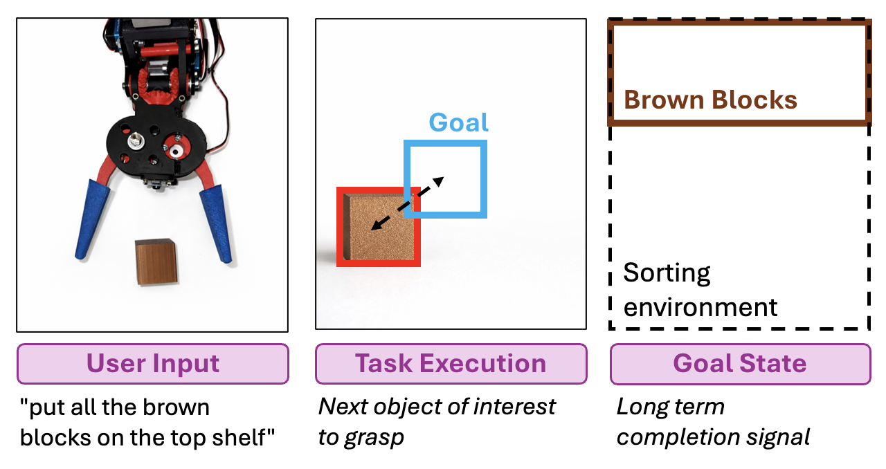
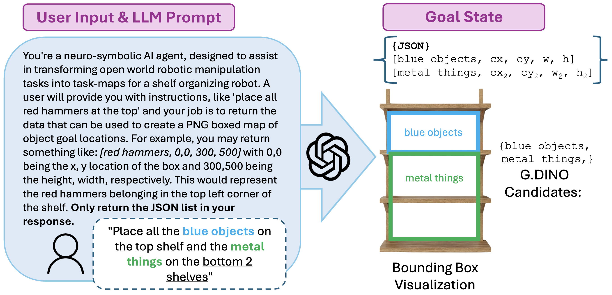
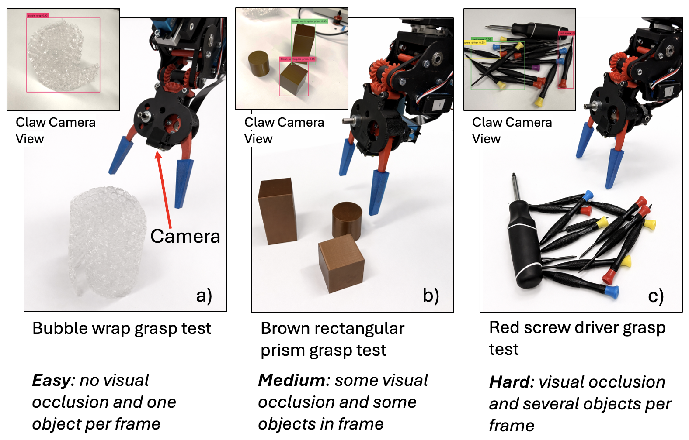
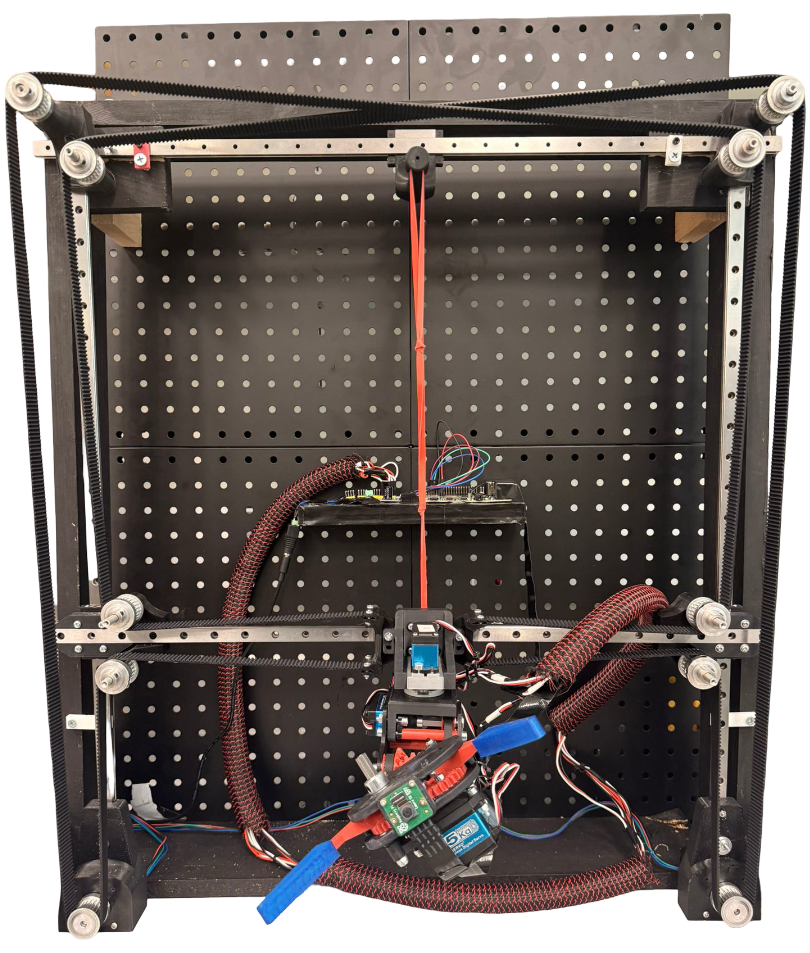

For robotics to be effectively integrated into household or industrial environments, machines must adapt to natural-language prompts in real time. Although vision-language models (VLMs) have enabled zero-shot generalization in robot task and motion planning (TAMP), current state-of-the-art approaches often remain computationally heavyweight or require extensive training on thousands of demonstrations. In this paper, we present GRASP (Grounded Reasoning and Symbolic Planning), a framework designed as a step toward open-vocabulary tabletop manipulation. Our approach leverages a pretrained VLM to translate natural-language queries into neuro-symbolic goal states, which are then grounded in the physical world via a specialized bounding-box detection pipeline. Unlike previous methods that rely on fixed color lists or hard-coded coordinates, GRASP enables robots to interpret abstract spatial concepts—such as top shelf—and execute tasks without additional fine-tuning. Experimental results demonstrate that our system achieves high instruction compliance and precision, offering a scalable solution for general-purpose robotic sorting and arrangement.
Natural language instructions compiled into explicit symbolic goal states, enabling interpretable and verifiable task execution.
Closed-loop symbolic goal evaluation replaces policy fine-tuning for small-scale open-world rearrangement with zero-shot execution.
A lightweight grounding and proportional control pipeline links open-vocabulary detection to continuous motion without learned action policies.
At each timestep, GRASP closes the loop between language, perception, and action.

Given a natural language instruction, GRASP grounds it into a symbolic goal state, executes the manipulation task, and evaluates completion via bounding box similarity.
Click any state to see its transition predicates.
Click a state above to see details
A structured prompt instructs the LLM to return a JSON goal state; GroundingDINO candidates are used to ground each label to a bounding box in the scene.

Figure 1. User input and LLM prompt (left) produce a structured JSON goal state with per-label bounding box coordinates, which are then visualized on the shelf (right).
Drag or resize the orange detection box to explore how IoU and center distance combine into the similarity score: S = max(0, min(1, (IoU + (1 − dist)) / 2))
90 total trials: 3 difficulty levels × 3 objects × 10 trials each.

Figure 6. Representative grasping scenarios for each difficulty level. Easy: single object, no visual occlusion. Medium: some visual occlusion with distractors. Hard: heavy visual occlusion and multiple objects per frame.
31 participants aged 15–45. Average rating: 4.18 (σ = 1.14). Over 50% of responses in every category rated the visualization a 5.
Per-task training data requirements across language-conditioned manipulation systems. Click a column header to sort.
| Paper | Demos / Task | Training Type |
|---|---|---|
| GEM | 10–20 | Imitation |
| LEMMA | 800 | Imitation |
| RFST | 1,000 | Imitation |
| ERRA | 300 | Inference learning |
| RoboMamba | ~500 | Sim fine-tune |
| MOO | ~11.8K | Teleop imitation |
| LoHoRavens | 20K | Primitive IL |
| GRASP (Ours) | 0 | Zero-shot |

Custom-designed differential claw arm, 3 degrees of freedom, controlled via Python on Raspberry Pi 4B
Logitech Brio 100 — 1080p @ 30fps, 58° diagonal FOV, fixed focus, USB-A, mounted at top of shelf looking down over workspace
Raspberry Pi Camera Module v2 — 8MP Sony IMX219, 3280×2464 still / 1080p @ 30fps video, 62.2° H × 48.8° V FOV, fixed focus, CSI ribbon cable, mounted on end-effector
Raspberry Pi 4B (Linux) — Onboard Python control and actuation
MacBook Air — GroundingDINO inference offloaded over WiFi
GPT-4o — Cloud API
Pi captures frames → transmits to MacBook over WiFi → MacBook runs G.DINO → returns annotated frames to Pi. "Network latency" in ablations refers to round-trip time.
Three conditions evaluated against the full GRASP system.
Motion planning without exponential smoothing or deadband filtering. Isolates the contribution of noise-reduction to stable grasping.
Compares alignment quality when the system executes a fixed plan without re-evaluating scene state versus full closed-loop feedback.
Replaces highest-confidence G.DINO logit selection with random bounding box selection, isolating confidence-ranked targeting contribution.
| Loop | Smoothing | Deadband | Selection | Success Rate | Net Latency (s) | Inference (s) | Total (s) |
|---|---|---|---|---|---|---|---|
| Open | ✓ | ✓ | Highest logit | 4/10 | 4.421 | 5.495 | 12.416 |
| Closed | — | — | Highest logit | 5/10 | 4.097 | 4.984 | 7.072 |
| Closed | ✓ | ✓ | Random | 3/10 | 3.560 | 3.377 | 6.001 |
| Closed | ✓ | ✓ | First | 4/10 | 3.537 | 3.244 | 4.134 |
| Closed | ✓ | ✓ | Highest logit | 8/10 | 3.539 | 3.444 | 4.036 |
Highlighted row is the full GRASP system. All timing metrics averaged over 10 trials.
@article{grasp2026,
title = {GRASP: A Neuro-symbolic Approach for
Language-Conditioned Robot Manipulation},
author = {Allison Andreyev and Landon Eum and Nestor Tiglao and Romel Gomez},
year = {2026},
}